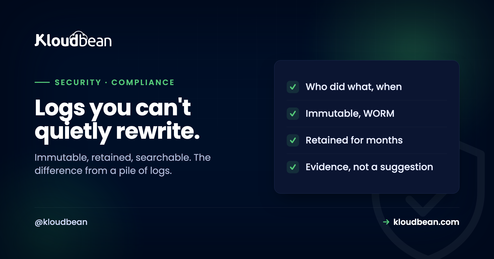

The Audit Trail: Why Having Logs Isn't Enough for Compliance

Every serious compliance framework, whether SOC 2, ISO 27001, PCI DSS, or a national one, eventually asks the same question: can you prove who did what, and when? The answer is an audit trail, a record of the actions taken across your systems. Most teams think they have this covered because they have logs. But there is a distinction that separates a compliance-grade audit trail from a pile of log files, and auditors care about it intensely: if someone with access can quietly edit or delete the record, it is not evidence, it is a suggestion. The value of an audit trail lives almost entirely in whether it can be trusted, and that comes down to one word most people skip over.
An audit trail records the significant actions in a system: who did what, when, and from where, each entry carrying a timestamp, a user identity, a source address, the resource touched, and the action taken. What makes it compliance-grade rather than just logs is immutability: the record must be tamper-proof, so not even an administrator or an attacker who gains access can alter or delete it to cover their tracks. This is usually achieved with write-once (WORM) storage and retention locks. Frameworks also require keeping the trail for a defined period, often many months. On Kloudbean, an enterprise Audit Trail provides an immutable, searchable, account-wide log with CSV export, backed by write-once storage and long retention, built for exactly this purpose.
What an audit trail actually records
Before the trust question, it helps to be concrete about what a good audit entry contains, because "logs" is too vague a word.
A useful audit trail captures the meaningful actions in your environment, not routine noise, and each entry answers the who, what, when, and where. That means a timestamp, the identity of the user or service that acted, the source address they acted from, the specific resource affected, and the action taken. So an entry reads, in effect, "at this time, this user, from this address, changed this firewall rule" or "granted this permission" or "accessed this record." The events worth capturing are the ones that matter for security and accountability: sign-ins and failed sign-ins, permission and role changes, firewall and network changes, access to sensitive data, and configuration changes to the infrastructure. When those are all recorded consistently, you can reconstruct what happened during an incident, demonstrate control to an auditor, and spot anomalies before they become incidents. That reconstruction is the entire purpose, which is why the next section matters so much.
The property that matters most: immutability
Here is the point that turns logs into evidence, and it is the one most setups quietly fail. If the record can be changed, it proves nothing.
Think about it from the attacker's perspective. Someone who compromises an admin account, or a malicious insider, does not just take their action; they then try to erase the trace of it. If your audit log is an ordinary file or a database table that an administrator can edit or delete, then the very person you most need the log to catch is the person who can quietly remove their own entries. A log that the powerful can rewrite protects no one from the powerful. Compliance-grade audit trails solve this with immutability: entries are written once and cannot be altered or deleted afterward, typically using write-once-read-many (WORM) storage and retention locks that prevent even an administrator from tampering with the record for a defined period. This is the decision-changing distinction. "We have logs" is common and nearly worthless as evidence; "we have a tamper-proof audit trail that not even our own admins can alter" is what an auditor, an incident responder, and a regulator actually want. When you evaluate any audit capability, the first question is not whether it records events, it is whether anyone can change what it recorded.
Retention: keep it long enough to matter
An immutable trail that only goes back a week is still a problem, because the events you most need to investigate are often discovered late.
Breaches and misconduct frequently come to light months after they happen, so a trail that has already rolled over and discarded old entries cannot answer the questions asked of it. That is why frameworks specify retention periods measured in months, not days, and a common bar is on the order of eighteen months of retained logs. Retention has two parts: keeping the data for long enough, and locking it so it cannot be deleted early, which is where a retention lock on write-once storage comes in. The two properties reinforce each other: immutability means the entries cannot be altered, and retention means they will still be there when someone finally comes looking. Together they turn a live log into durable evidence. When you plan an audit trail, decide the retention period your obligations require, and make sure the storage enforces it rather than trusting a policy that a busy admin could quietly shorten.
Why every framework asks for this
Audit logging is not a niche control; it is one of the most universal requirements across every serious framework, and understanding why makes it feel less like a checkbox.
SOC 2, ISO 27001, PCI DSS, and national frameworks all require some form of activity logging with retention, because an audit trail is the evidence layer that everything else rests on. Access controls, encryption, and change management are only credible if you can demonstrate they were actually in force and detect when they were not, and that demonstration is the audit trail. It is what lets you show an assessor that only authorised people made changes, prove during an incident exactly what an attacker touched, and hold your own team accountable. In that sense the audit trail is less a security feature than the memory of your whole security posture: without it, every other control is a claim you cannot back up. That is why it appears in framework after framework, and why "we have a tamper-proof, retained audit trail" is one of the most useful sentences you can say to an auditor.
Where Kloudbean fits, honestly
For enterprise engagements, Kloudbean provides an Audit Trail built for exactly this: an immutable, searchable, account-wide record of activity, with CSV export for handing evidence to auditors. Underneath, it uses write-once (WORM) storage with retention locks and long retention on the order of the eighteen-month bar frameworks tend to expect, and infrastructure logs capture the who, what, when, and where described above, including sign-ins, permission changes, network changes, and configuration changes. It is an Enterprise capability rather than a switch on a small self-serve plan, because tamper-proof, long-retained logging is an infrastructure commitment, not a checkbox.
The honest boundary: this covers the infrastructure and account layer, an immutable trail of what happened to your servers, access, and configuration. Your application's own audit logging, the record of what users did inside your software, is something you build into the application, and reviewing the trail, investigating anomalies, and running the governance around it remain your organisation's job. The platform gives you evidence that is trustworthy because it cannot be tampered with; using that evidence, and logging your own application layer to the same standard, is the shared part. The wider map of who covers what is in the secure and compliant hosting guide.
Related reading
An audit trail is one control in a compliance program. See how it feeds SOC 2 compliant hosting and ISO 27001 hosting, and how it sits alongside encryption at rest and in transit and access controls like subusers and access control. The overview that ties the layers together is secure and compliant hosting.
Evidence your own admins can't rewrite.
Kloudbean's enterprise Audit Trail gives you an immutable, searchable, account-wide record of activity with CSV export, on write-once storage with long retention, built for the frameworks that ask for it. Compare the platform in Kloudbean vs Cloudways, or start at kloudbean.com.
Immutable audit trail (Enterprise) · Write-once storage · Long retention · CSV export
FAQ
What is an audit trail?
An audit trail is a record of the significant actions taken in a system, capturing who did what, when, and from where. Each entry typically includes a timestamp, the acting user or service, the source address, the resource affected, and the action taken. It covers events like sign-ins, permission changes, network and firewall changes, and access to sensitive data, so you can reconstruct what happened during an incident and demonstrate control to an auditor.
Why do logs need to be immutable for compliance?
Because a log that can be edited or deleted is not trustworthy evidence. The person you most need an audit trail to catch, a compromised admin account or a malicious insider, is often the one with the access to erase their own entries. Immutability, usually through write-once (WORM) storage and retention locks, ensures entries cannot be altered or deleted after they are written, so the record survives even someone with high privileges. That trustworthiness is what auditors and incident responders require.
How long should audit logs be retained?
Long enough that late-discovered incidents can still be investigated, which is why frameworks specify months rather than days, with a common bar on the order of eighteen months. Retention has two parts: keeping the data for the required period, and locking it so it cannot be deleted early. A retention lock on write-once storage enforces this, so the trail is guaranteed to be there when someone finally comes looking, rather than depending on a policy an admin could shorten.
Is having server logs the same as having an audit trail?
Not for compliance purposes. Ordinary server logs are useful, but if they can be edited or deleted, and if they roll over quickly, they do not meet the bar. A compliance-grade audit trail adds immutability so entries cannot be tampered with, retention so they persist for the required period, and consistent capture of who did what and when. The gap between "we have logs" and "we have a tamper-proof, retained audit trail" is exactly what an auditor probes.
Which compliance frameworks require an audit trail?
Effectively all of the major ones, including SOC 2, ISO 27001, and PCI DSS, as well as national frameworks, require some form of activity logging with retention. This is because the audit trail is the evidence that all your other controls were actually enforced. Without it, access controls, encryption, and change management are claims you cannot substantiate, which is why audit logging appears as a requirement across framework after framework.
What is WORM storage?
WORM stands for write-once-read-many: data can be written and read but not modified or deleted for a set period. For audit trails this is the mechanism that delivers immutability, because once an entry is written it is locked against tampering, even by administrators, until its retention period expires. Combining WORM storage with a retention lock is the standard way to make an audit trail genuinely tamper-proof rather than merely a log someone promised not to edit.
Does an audit trail cover my application's user activity?
An infrastructure audit trail covers actions at the server, account, and configuration layer, such as sign-ins, permission changes, and network changes. The record of what users do inside your own software is application-level logging that you build into the application itself. Both matter, and ideally both meet the same immutability and retention standard, but they are separate layers: the platform can provide the infrastructure trail, while your app's own audit logging is yours to implement.
Does Kloudbean provide an audit trail?
Yes, as an enterprise capability. Kloudbean's Audit Trail is an immutable, searchable, account-wide record of activity with CSV export, backed by write-once storage and long retention in line with the periods frameworks expect. It captures infrastructure and account activity so you have trustworthy evidence for audits and incidents. Reviewing the trail and logging your own application layer to the same standard remain your organisation's responsibility.